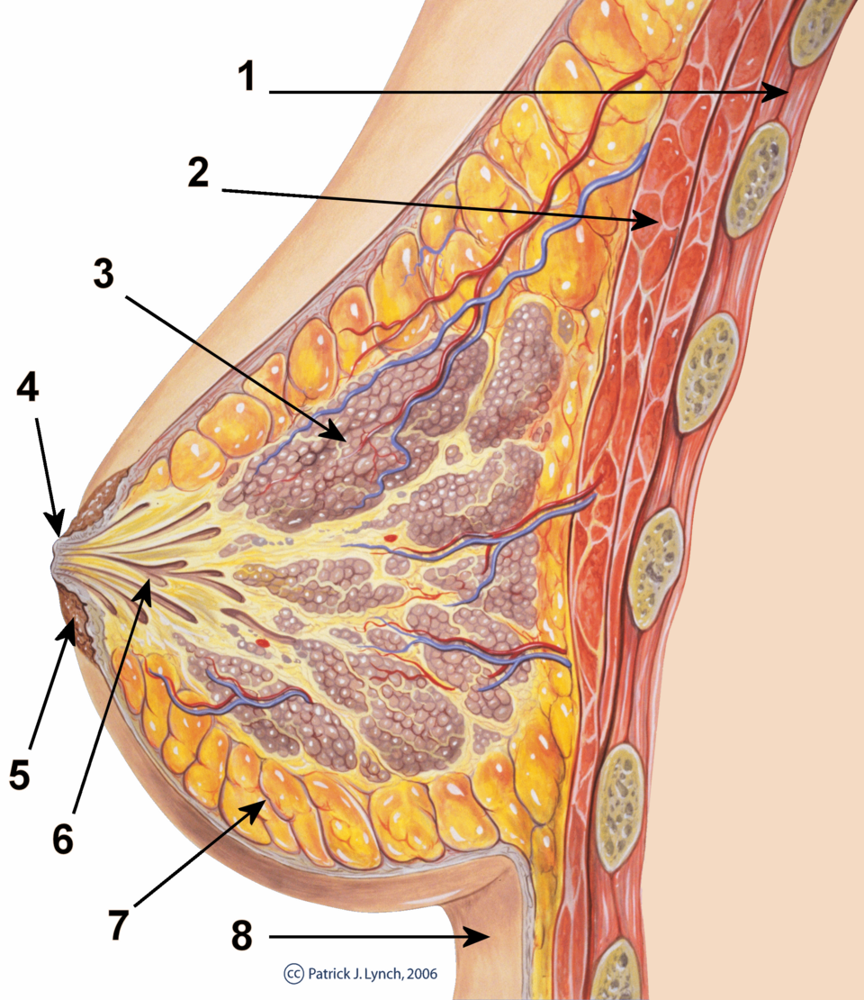
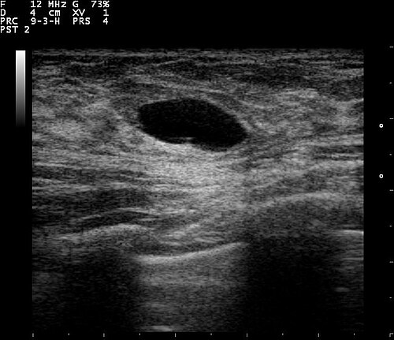
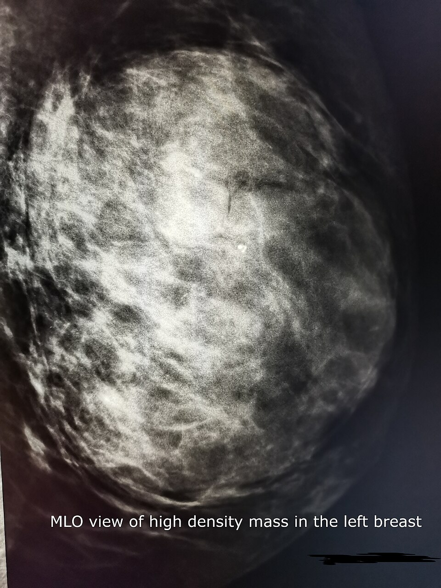
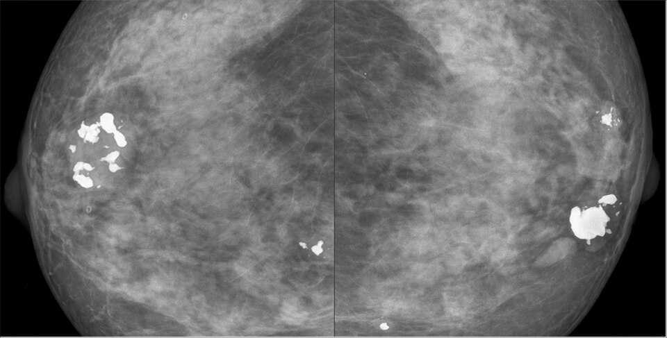
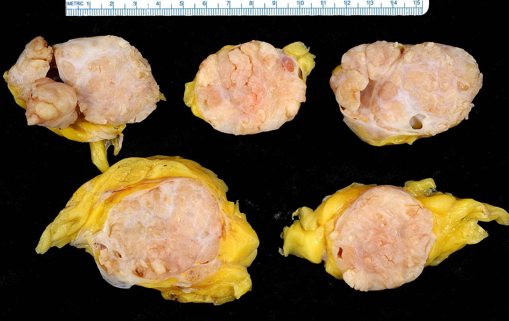
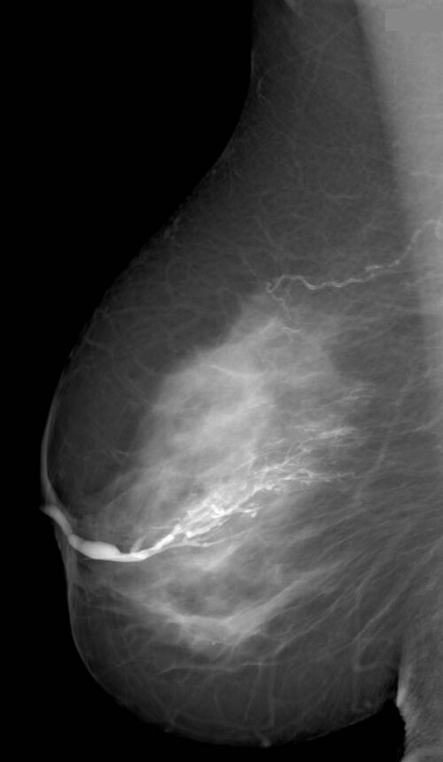
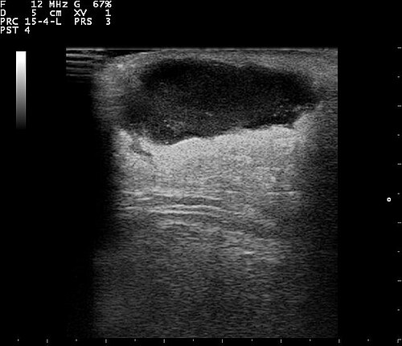
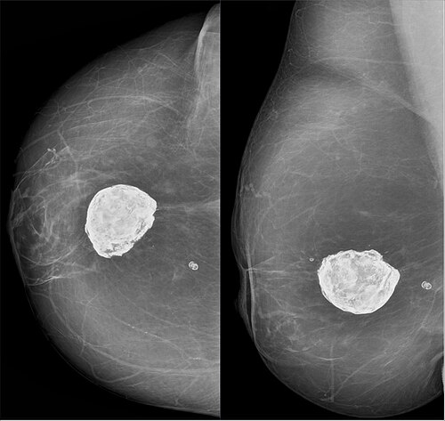
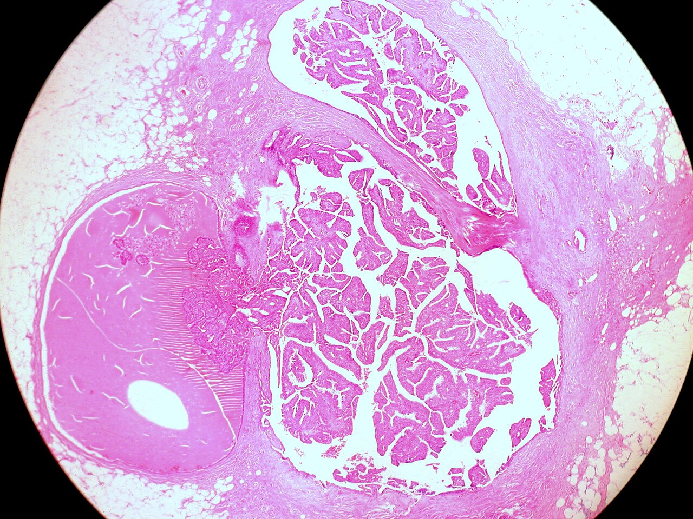
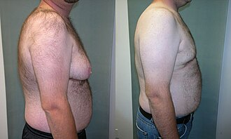

מחלות שפירות של השד
גוש, כאב, הפרשה מהפטמה, דלקת ונגעים בסיכון גבוה: מה מבררים, מה מנקזים ומה כורתים
בסוף המפגש תדעו
- לגשת בצורה מסודרת לגוש, לכאב ולהפרשה מהפטמה ולדעת מתי צריך הדמיה וביופסיה
- להבדיל בין ציסטה, פיברואדנומה וגידול פילודס ולדעת מתי כורתים
- לאבחן ולטפל בדלקת ובמורסה בשד, בהנקה ומחוץ להנקה
- להכיר את הנגעים בסיכון גבוה (אטיפיה, LCIS, פפילומה, צלקת רדיאלית) ואת המשמעות שלהם לסיכון ולמעקב
- לזהות גינקומסטיה ולחפש לה סיבה
איפה בשד נולדת כל מחלה

👆 לחצו על אזור בציור כדי לקרוא עליו
פריחה שמתחילה בפטמה מחשידה ל-Paget, אקזמה מתחילה בעטרה. פטמה שנמשכה פנימה: אחרי דלקת כרונית מתחת לעטרה היא בדרך כלל דו-צדדית וקיימת שנים. סרטן גורם לשינוי חד-צדדי שמתפתח בשבועות עד חודשים.
כאן יושבת הפפילומה התוך-צינורית, הסיבה השכיחה ביותר להפרשה דמית מצינור אחד. כאן גם הרחבת הצינורות והדלקת סביבם (periductal mastitis) אצל מעשנות וחולות סוכרת. גלקטוצלה יושבת לרוב במרכז השד או מתחת לפטמה.
ציסטות נוצרות מהרחבה של אונוניות וצינוריות קטנות. פיברואדנומה ופילודס בנויים מסטרומה ומאפיתל. כאן גם השינויים השגשוגיים, האטיפיה וה-LCIS וכאן מתחיל גם רוב סרטן השד.
נמק שומן אחרי חבלה, ניתוח, השתלת שומן או הקרנה. יכול להיראות כמו סרטן: גוש קשה עם הסתיידויות. אין לו פוטנציאל ממאיר.
לא כל כאב "בשד" מגיע מהשד. הסיבה השכיחה לכאב מוקרן היא דלקת בבורסה שבין השכמה לדופן החזה. הזרקה בנקודה הכואבת לאורך הגבול הפנימי של השכמה היא גם האבחנה וגם הטיפול.
מה תקין ולא צריך ביופסיה
- קו החלב: מבית השחי עד המפשעה. שד נוסף או פטמה נוספת לאורכו. רקמת שד בבית השחי יכולה לגדול בהריון ולהישאר אחרי ההנקה
- תסמונת Poland: חוסר חד-צדדי של רקמת שד, של שרירי החזה ושל ה-serratus ולפעמים של צלעות
- יילודים: ב-90% יש הפרשה מהשד ("חלב מכשפות") מהורמונים של האם. חולפת תוך 3–4 שבועות
- ניצן שד לפני גיל 12 בלי סימני התבגרות אחרים: לא גידול ולא סיבה לביופסיה
- מחזור החודש: לפני הווסת מצטברים נוזל ובצקת. השד כואב ומגורגר יותר
- גוש לא תחום אצל אישה לפני הבלות: בדרך כלל עוקבים לאורך מחזור אחד לפני שמתערבים
- אחרי הבלות: הבלוטות נסוגות והשד הופך לשומני. טיפול הורמונלי יכול להחזיר צפיפות וציסטות
- הנקה: הפרולקטין מייצר חלב, האוקסיטוצין מכווץ את התאים סביב הצינורות
שלוש תלונות, אותה שיטה
אנמנזה
- גוש: ממתי, האם גדל, האם משתנה עם המחזור
- כאב: מחזורי או לא מחזורי, ממוקד או מפוזר
- הפרשה: צד אחד או שניים, צינור אחד או כמה, דמית או לא, ספונטנית או רק בלחיצה
- הריון והנקה אחרונים, עישון, סוכרת, תרופות, ניתוחים וביופסיות קודמים. גורמי סיכון לסרטן
בדיקה
- בישיבה ובשכיבה, כמו שלמדנו בשבוע שעבר. מתארים גוש: גודל, עקביות, תחימות, תזוזה, מיקום (שעה ומרחק מהפטמה)
מסטלגיה ושינויים פיברוציסטיים
- שינויים פיברוציסטיים: לא "מחלה". תגובה מוגברת של השד להורמונים, בעיקר בעשור הרביעי והחמישי ועד הבלות. כאב, רגישות וגרגור
- כאב מחזורי: לפני הווסת. דנזול, לופרון או טמוקסיפן עוזרים, אבל עם תופעות לוואי משמעותיות
- כאב לא מחזורי: בדרך כלל ללא סיבה ידועה וקשה יותר לטיפול. מגיל 30: בדיקה, ממוגרפיה ואולטרסאונד. גוש שנמצא הופך למוקד הבירור
- ציסטה כואבת: שאיבה בדרך כלל פותרת את הכאב
- כאב מוקרן: בעיקר מהבורסה שבין השכמה לדופן החזה. הזרקה בנקודה הכואבת, אחר כך חום ונוגדי דלקת
ציסטה: מתי לשאוב ומתי להמשיך לברר
- ציסטה נמושה מופיעה לפחות באחת מכל 14 נשים. ב-50% יש כמה ציסטות או שהן חוזרות
- בעיקר מגיל 35 ועד הבלות. ציסטה חדשה אחרי הבלות קשורה בדרך כלל לטיפול הורמונלי
- ציסטה פשוטה באולטרסאונד בלי תסמינים: לא צריך עוד בירור ולא צריך לשאוב
- שאיבה: נוזל צהוב, עכור או ירוק כהה הוא תקין. שולחים לציטולוגיה רק נוזל דמי
- חוזרת יותר מפעמיים: ביופסיה במחט עבה. ציסטה מורכבת עם רכיב מוצק: ביופסיה מהרכיב המוצק
- ציסטה חוזרת ומציקה: אפשר להוציא אותה כולה במחט ואקום. ניתוח רק כשהיא חוזרת, יש אטיפיה, ההוצאה לא שלמה או שהיא גדולה וכואבת

פיברואדנומה מול פילודס
- הגידול השני בשכיחותו בשד (אחרי סרטן) והשכיח ביותר מתחת לגיל 30. נדיר כגוש חדש אחרי 40–45
- גוש קשה, חלק או אונתי, ש"מחליק" מתחת לאצבעות
- סרטן בתוך פיברואדנומה חדשה: 0.2%. אחרי אבחנה בביופסיה לא חייבים לכרות
- כורתים: מעל 3 ס״מ, גדילה מהירה, חשד לפילודס, תסמינים או רצון המטופלת. ענקית: מעל 5 ס״מ
- בעיקר בשנות ה-40. ממוצע כ-5 ס״מ, גדל מהר. רמזים: מעל 3 ס״מ, גדילה מהירה, אישה מבוגרת יותר
- שפיר, גבולי או ממאיר לפי הסטרומה
- שפיר: כריתה כמו פיברואדנומה. גבולי וממאיר: כריתה רחבה עם שוליים של 1 ס״מ ומעלה, לפעמים כריתת שד
- לא בודקים את בית השחי. הישנות מקומית בעיקר בשנתיים הראשונות. גרורות בדם, בעיקר לריאות



מתי הפרשה מדאיגה

בהנקה ומחוץ להנקה
- חיידקים נכנסים דרך הפטמה. בדרך כלל S. aureus או סטרפטוקוק
- חום, לויקוציטוזיס, אודם ורגישות
- אנטיביוטיקה (לפי הסיכון ל-MRSA) וממשיכים לרוקן את השד
- מורסה: אולטרסאונד ושאיבה במחט קודם. חתך וניקוז רק כשהשאיבה והאנטיביוטיקה לא הצליחו. מורסות כאלה בדרך כלל מרובות מדורים
- קשורה לעישון ולסוכרת. זיהום מעורב, אירובי ואנאירובי
- כאב ואודם מתחת לעטרה. התקפים חוזרים גורמים לפטמה שנמשכת פנימה, לגוש ולפעמים לפיסטולה לעור שליד העטרה
- בהתחלה: חום מקומי ואנטיביוטיקה שמכסה גם אנאירובים. מורסה: שאיבה
- חוזרת: כריתה של כל מערכת הצינורות מתחת לעטרה, רק אחרי שהדלקת החריפה חלפה

דלקת גרנולומטוטית, נמק שומן וגלקטוצלה

שפיר היום, סיכון מחר
- ADH בביופסיה: יותר מ-20% מתגלים כסרטן בכריתה ולכן בדרך כלל כורתים. ב-ALH הסיכון נמוך יותר וההחלטה אישית
- צלקת רדיאלית: נראית כמו כוכב בהדמיה. בדרך כלל כורתים כדי לשלול סרטן
- פפילומה עם אטיפיה: כמחצית מתגלות כ-DCIS או סרטן: כריתה. בלי אטיפיה, קטנה ומקרית: פחות מ-10%, אפשר לעקוב
- LCIS קלאסי: סמן לסיכון ולא שלב לפני סרטן. חצי מהגידולים מופיעים בשד השני. מעקב בסיכון גבוה ושקילת מניעה בתרופות
- LCIS פלאומורפי: אגרסיבי. מטפלים בו כמו ב-DCIS: כריתה
- מניעה: טמוקסיפן הוריד ב-75% סרטן חודרני באטיפיה. אפשר מינון נמוך של 5 מ״ג ל-3 שנים
כך נראית פפילומה תוך-צינורית
- פוליפ של האפיתל בתוך צינור. בדרך כלל ליד העטרה, פחות מ-1 ס״מ, אבל יכולה להגיע ל-4–5 ס״מ
- ליד הפטמה: הפרשה דמית. לפעמים גוש מתחת לעטרה או ממצא בממוגרפיה
- מתי כורתים: הפרשה דמית, גוש נמוש או אטיפיה בביופסיה
- איך: חתך סביב העטרה, מזהים את הצינור המפריש עם גשושית דקה או צבע וכורתים רק אותו
- פפילומות רבות (papillomatosis) מעלות את הסיכון לסרטן גם בלי אטיפיה

שד בגבר
- גינקומסטיה: רקמת בלוטה. פסאודו-גינקומסטיה: רק שומן
- בגיל ההתבגרות (13 עד בגרות צעירה): חד או דו-צדדית ובדרך כלל נסוגה. ניתוח רק אם לא נסוגה, חד-צדדית או מפריעה מאוד
- מעל גיל 50: שכיחה. מחפשים תרופות: דיגוקסין, תיאזידים, אסטרוגנים, פנותיאזינים, תיאופילין, קנאביס
- מחלות שצריך לחפש: שחמת, אי-ספיקת כליות, תת-תזונה, היפוגונדיזם, גידול באשך, יתר פעילות של בלוטת התריס

מחקרים שכדאי להכיר
500 נשים עם ADH, LCIS או DCIS. 5 מ״ג ביום ל-3 שנים מול פלצבו. אחרי כ-10 שנים: 11.3 לעומת 19.5 אירועים ל-1,000 שנות אישה, בלי עלייה בתופעות לוואי קשות. צריך לטפל ב-14 נשים כדי למנוע אירוע אחד ב-10 שנים
Lazzeroni M et al. J Clin Oncol 2023;41(17):3116-312118,704 נשים עם ביופסיה שפירה (1967–2013), מעקב חציוני של 15.8 שנים. 9.9% חלו. הסיכון היחסי עלה מפי 1.61 לפי 1.99, בעיקר כי בעידן המחט העבה מאבחנים יותר נגעים שגשוגיים ואטיפיה
Degnim AC et al. JNCI Cancer Spectr 2025;9(1):pkae128140 מטופלות. שטיפת צינורות עם טריאמצינולון ואנטיביוטיקה ומעקב, מול סטרואידים דרך הפה. תגובה קלינית מלאה בשנה: 85.5% לעומת 87.3% (לא נחות), עם פחות תופעות לוואי מסטרואידים
Chen X et al. Nat Commun 2024;15(1):9144חמישה דברים לקחת למחלקה
- אולטרסאונד מבדיל בין ציסטה לגוש מוצק. ציסטה פשוטה בלי תסמינים לא צריכה טיפול
- פיברואדנומה מאובחנת בביופסיה ולא חייבת כריתה. גוש מעל 3 ס״מ או שגדל מהר: לחשוב על פילודס
- הפרשה דמית, ספונטנית ומצינור אחד דורשת בירור. דו-צדדית מכמה צינורות: בדרך כלל לא
- מורסה בשד: אולטרסאונד ושאיבה במחט קודם. אצל אישה שלא מניקה לחשוב גם על עישון, על IGM ועל סרטן דלקתי
- אטיפיה ו-LCIS הם סמנים לסיכון: כריתה לפי סוג הנגע, מעקב צמוד ושקילת מניעה בתרופות